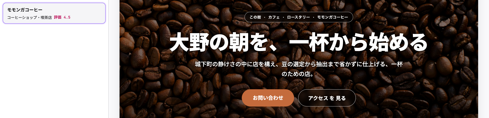

MapsLeads v2.1.0 · 使い方 手順
制作会社 の 考え方 を AI に 教えて、
店 ごと の サイト案 コピー を 自動 生成
サイト案 の hero キャッチコピー · About セクション · Services を、 業種 別 の 汎用 テンプレ じゃ なく、 あなた の 会社 の デザイン 思想 · トーン に 沿った 文章 で 出せる ように なりました。 5 手順 で 使え ます。
始める 前 に
mapsleads-v2.1.0.zip を DL → chrome://extensions で 一度 削除 → zip 解凍 → 「読み込む」 で 再 install → 以前 の ライセンスキー を 入力。
1
拡張 popup の 一番 下 に ある 「あなた の 会社 の 考え方」 を 開く
Chrome 右上 の MapsLeads アイコン を 押して popup を 開き、 一番 下 まで スクロール。 「AI が サイト案 コピー を 書く 時 に 反映 する 『あなた の 会社 の 考え方』」 と いう 折りたたみ が あり ます。
2
テキスト 欄 に、 制作会社 として 大切に して いる こと を 貼り付ける
最低 20 文字、 最大 8000 文字。 「〜の 表現 は 使わ ない」 「〜を 優先 する」 の ような 判断 基準 を 入れる と、 生成 の 一貫性 が 大きく 上がり ます。 抽象的 だと AI も 抽象的 に なる ので、 具体 的 に。
書き方 の 対比
抽象 的
お客様 に 寄り添う デザイン を 心がけて います。
具体 的
「地域 で 30 年 続く 店」 を 作る HP を 作って います。 派手 な 装飾 より、 客 が 迷わ ず 電話 · 予約 まで 辿り着ける 情報 設計 を 優先。 「地域 で 愛される」 「お客様 の 笑顔」 の ような テンプレ 表現 は 使わ ず、 その 店 に しか 無い 具体 を 書き ます。 写真 は 実 店舗 のみ、 ストック 素材 は 使い ませ ん。
保存 が 済む と、 テキスト 欄 の 下 に 文字 数 と 保存 時刻 が 緑 文字 で 表示 され ます。 一度 保存 すれ ば、 以降 の サイト案 生成 に 自動 で 反映 (毎回 貼り直し 不要)。 変更 は 上書き 保存、 削除 は 「クリア」 で 汎用 テンプレ に 戻り ます。
4
通常 通り 収集 → 「サイト案 を 作る」 を 押す
エリア + 業種 (or 店名 直接) で 検索 → 収集 完了 後、 「サイト案 を 作る (全 件)」 ボタン を 押す だけ。 別 タブ で サイト案 viewer が 開き ます。
5
店 を 選ぶ と、 数 秒 後 に AI 生成 コピー に 差し替わる
サイト案 viewer で 左 の 一覧 から 店 を 選ぶ と、 まず 業種 別 テンプレ で 描画 され、 1-5 秒 後 に hero キャッチコピー · About · Services が AI 生成 版 に 差し替わり ます。 保存 した 考え方 と 店 の 具体 情報 (店名 · 業種 · 立地) を 組み合わせて 都度 生成。 口コミ 件数 · 評価 の 数値 は AI に 渡さ ない ので、 「◯◯ 件 の 口コミ が 示す」 型 の 権威 借り 訴求 は 出 ませ ん。

実 生成 例: 福井県 大野市 「モモンガコーヒー」 に 上記 の 考え方 を 適用
生成 結果 の 対比 (同じ 店 · 同じ サイト案)
汎用 テンプレ (従来)
「この街 に、 通いたく なる 場所 を。 アクセス、 営業時間、 メニュー。 ここ で、 お店 の 空気 を 感じて ください」
AI 生成 (考え方 反映)
「大野 の 朝 を、 一杯 から 始める。 城下町 の 静けさ の 中 に 店 を 構え、 豆 の 選定 から 抽出 まで 省かず に 仕上げる、 一杯 の ため の 店」
知って おく と 良い こと
- 料金
- 1 生成 あたり 約 ¥3。 同 考え方 で 5 分 以内 に 続けて 生成 する と、 2 回目 以降 は 約 ¥2 (AI の キャッシュ 機能 で 割引)。
- 月 上限
- 利用鍵 単位 で 月 200 生成 まで。 超えた 場合 は 翌月 1 日 に 自動 復帰。 上限 変更 が 必要 なら お知らせ ください。
- 効き 目 を 上げる
- 「考え方」 は 具体的 に 書く ほど 効き ます。 「〜は 使わ ない」 「〜を 優先 する」 の ような 判断 基準 が 一貫性 に 直結。
- 店 別 上書き
- 現状 は 全 店 で 同じ 考え方 が 反映 され ます。 店 別 に トーン を 変え たい 場合 は 都度 「考え方」 を 書き 換えて 保存 → 該当 店 の サイト案 を 開く。
- AI の 補完
- メニュー 名 や 説明 は 業種 と 立地 から 妥当 な 範囲 で 補完 され ます (具体 数値 は 出し ませ ん)。 実 店舗 の 詳細 と 異なる 場合 は 手動 で 修正 して ください。
- 不具合 · 要望
- sales@skeleton-inc.jp まで お知らせ ください。